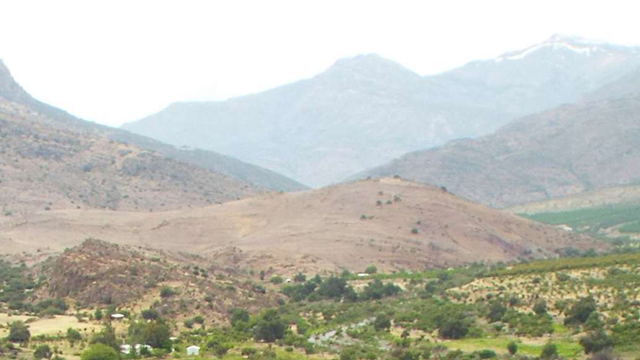
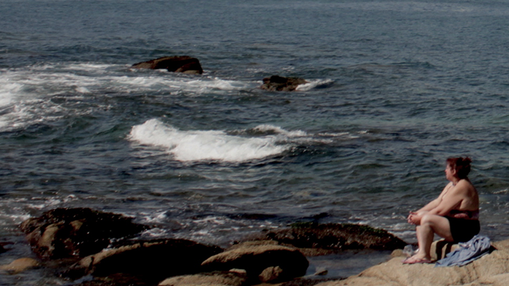

petorca, 2018
ver más

El paisaje que se omite y su recuperación ciudadana es un proyecto de Diseño Gráfico que invita a reflexionar sobre la forma paisajística en que Chile es percibido, desde sus orígenes como nación se ha fijado en el imaginario colectivo una privilegiada geografía física nacional. No obstante lo anterior, esta postal geográfica de exportación hace aparecer lo que conviene pues sólo existe en una realidad extractivista insostenible, enseñando un progreso en desmedro de la naturaleza que hace dudar sobre la copia feliz del Edén.
El territorio, como un espacio común entre geografía y quienes la habitan, se ha visto alterado en cientos de casos que han hecho uso de este espacio como material de producción, concentrando instalaciones industriales, que afectan la salud y espacios comunes en torno a la naturaleza, degradando su biodiversidad. Este panorama de flexible fiscalización, contribuye además a un cambio climático que pareciera ser irrelevante, situación que si bien es divulgada principalmente por medios independientes, es aún necesaria de seguir comunicando pues se siguen permitiendo este tipo de proyectos insostenibles en todos los plazos.
A continuación, se expondrá la dirección de algunas fotografías publicadas en medios de comunicación que visibilizan hechos críticos de crisis socioambiental. Estas, a partir de un encuadre selectivo se habilitaron como postales, bajo la premisa de un país que exporta y muestra un paisaje conveniente.